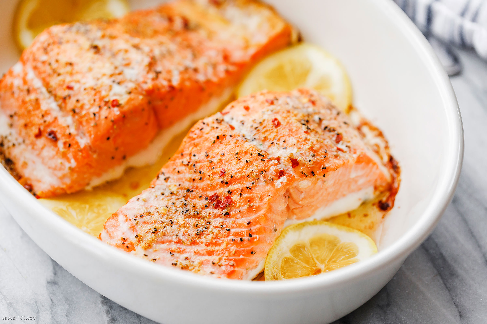

Baked Salmon

A plate of scrumptious, baked salmon. Hooooluy.
This baked salmon is a great recipe for beginners. This was my first time making fish and it was a hit.
Even my 9-year-old daughter who wouldn't ever dream of eating fish had half of my portion!
Ingredients:
- 6 tablespoons light olive oil
- 2 cloves garlic, minced
- 1 tablespoon lemon juice
- 1 tablespoon fresh parsley, chopped
- 1 teaspoon dried basil
- 1 teaspoon salt
- 1 teaspoon ground black pepper
- 2 (6 ounce) fillets salmon
Directions:
- Whisk olive oil, garlic, lemon juice, parsley, basil, salt, and pepper together in a medium bowl.
- Arrange salmon fillets in a small glass or ceramic baking dish; pour marinade over salmon. Cover and marinate in the refrigerator for about 1 hour, turning occasionally.
- Preheat the oven to 375 degrees F (190 degrees C).
- Transfer salmon fillets onto a large piece of aluminum foil. Spoon marinade on top and fold up the foil to seal. Place sealed foil packs on a baking sheet.
- Bake in preheated oven until fish flakes easily with a fork, about 35 to 45 minutes.
- Serve hot and enjoy!
Return to Home